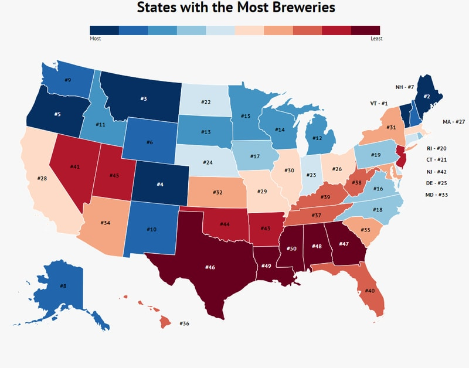
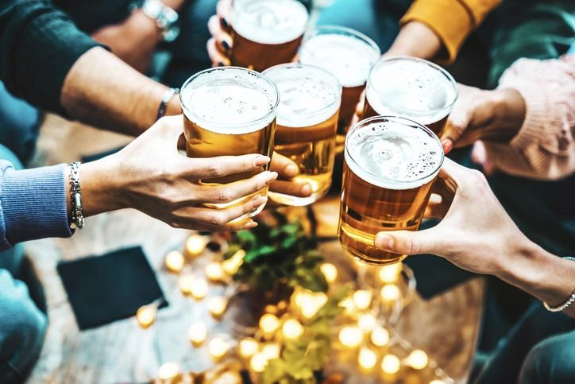
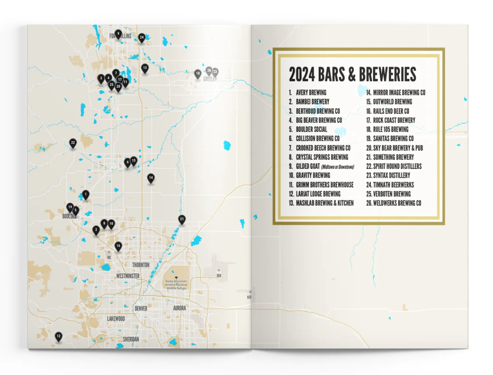
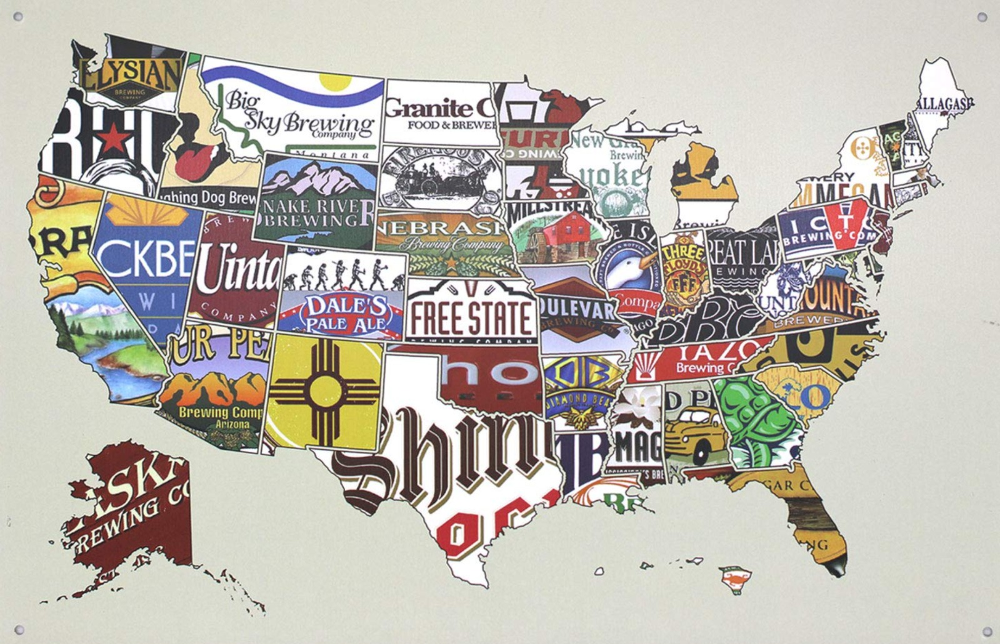

Introduction
What Is The Project?
The Brewery Project takes an in depth look into the world of Breweries and Beer in the US. This team will explore features of the brewing market from beer prices to brewery locations to common demographics of successful brewery towns. We will focus on key areas of interest for a range of beer fans from the seasoned brew bros to new, potential brewers. This study will take on interesting perspectives of the beer market in hopes to identify key trends in beer production, consumption and sales.
The Brewery Project will start with a look into beer sales and pricing across the country. This will include comparison of all your basic and well known beers across the States and a closer look at local grocery store and pub prices. With a basic understanding of the market, we will begin to focus in our report to review some of the factors that may promote breweries. Sometimes beer is associated with outdoor mountain activities, so we will examine this and other conditions (such as college towns and tech hubs) that may favor the brewery scene. These styles of living may also be intertwined with population demographics, so we’ll expand our exploration into additional factors such as income and age. The Brewery Project will conclude with actionable results that can guide future decisions on where to go if you want to buy beer, make beer, or drink beer.

Why Does The Project Matter?

The Brewery Project gives insight into where brewery hotspots are and how they are associated with communities and activities. We - as beer lovers ourselves - are always looking for new breweries with good beers. We find it interesting how brewing communities often cluster near mountain activity regions and would like to take a closer look at beer consumption across other parts of the country. For many, breweries often foster a relaxed and welcoming community space to unwind and relax after a long day. We hope to identify key areas that have taken strongly to the Brewery life as this may point us in the direction of identifying new towns that could support similar businesses.
The composition of breweries (micro to large commercial) and the kinds of populations/areas that support local breweries are important to study in order to maintain a diverse beer market. It is the underlying work of small companies that maintains the craft of brewing and we should do our best to support it. This information can ultimately inform business decisions in the brewing industry if you are a new or experienced brewery looking for your next potential location. A little extra knowledge about your target customers and their lifestyles, might just help point you to a successful brewery hotspot. Of course, if you just want to visit beer towns, this work will help you too.
Who Does The Project Affect?
Our project is relevant to both beer drinkers and beer brewers, primarily in the most populated metropolitan areas of the US. Of course as law abiding citizens, this will only apply to those who are 21+ years of age and permitted to consume alcohol.
For the bro-est of beer bros, certain localities have what’s known as a “beer passport”, which is a passport-like book that includes various breweries from the area. This encourages the passport holder to visit the included breweries where they will get one free beer and a stamp in their passport. With The Brewery Project, we want to take this a step further, and create a recommendation engine for beer lovers that personalizes brewery suggestions based on the user’s demographics and preferences. The recommendations will be based on features such as personal characteristics, whether the user is on a budget, what activities they like to do, and their location in the US.
Similarly, we intend to create a recommendation engine for beer brewers, to suggest the best place to open a new brewery. We know that it can be tricky for any new business to enter the market, and the beer/brewery market is certainly saturated in some places. We believe that this project could assist prospective producers in determining the best location for a new brewery based on market gaps, local demographics, and local attractions correlating with beer consumption.
Ultimately, if you are 21+ and want to drink beer, or brew it for others, this project is for you!

What Has Been Done So Far?
There are several websites, databases, and applications associated with individual beer brands, breweries, and venues.
What could be considered as “the world’s most popular beer-rating platform” [1], UNTAPPD [2] allows the community to rate beers and breweries. They maintain a robust database which helps maintain and showcase the ratings and sustain an almost social media like presences for individuals, brewers, and venues. Previously, they had API access for private app developers to use, but at this point in time has been discontinued.
A completely open-source database project focused around brewery-related data known as the Open Brewery DB [3]. They maintain API access, a GitHub page with international brewery data available for download, and even a Discord for this community to discuss their projects surrounding this open-source data. They have a project page with featured projects using their database. Most apps and projects at least influenced by this project have a social media or geographical focus.
The original data source and scrapers for the Open Brewery DB project was the Brewers Association [4]. Their stated purpose is to “promote and protect American craft brewers, their beers, and the community of brewing enthusiasts.” Their website features detailed exploratory analysis into the growth and other aspects of the brewing industry.
In summary, many of the current applications have been initial data compilations of craft beer and breweries, and apps focused on a social media or geographical recommendation focus.
However, an industry which does have plenty of research and is potentially transferable is real estate. The article “5 Ways to Apply Data Science to Real Estate” by Nelson Lau [5] provides a breakdown of how different features in data are applied to make price predictions, perform cluster analysis, and incorporate the use of GIS.
What Can Still Be Done?
Through our research on the topic, we have explored various databases and projects relating to beers and breweries. What we have found is that the existing databases and projects primarily focus on exploratory data analysis. We located digital brewery heatmaps, databases detailing various characteristics of breweries and beers, and rating systems for breweries and beers. However, we have yet to find any existing project utilizing a predictive model in the beer and brewery space. As mentioned previously, we intend to build a predictive model for beer lovers to find new breweries, and for prospective beer producers to find spaces to enter the market.
To build this model, we intend to utilize the various available datasets related to brewery locations and information, beer pricing, local attractions and nature, local schools and tech hubs, and population/census information. We will aggregate the data and implement data mining techniques to build a model that takes into account an individual’s goals and personal characteristics to suggest the best brewery to visit, or the best place to enter the market as a beer producer. For example, we want to be able to recommend the best brewery for an out of state, 30 year old traveler, who is visiting Colorado to hike a specific 14er. We also want to be able to inform a prospective beer brewer in Texas on the best place to open up a microbrewery.

Research Questions
- What is the frequency of breweries by US state?
- Are breweries concentrated in any of the 4 major US regions more than others?
- We’ve identified 5 types of features that could impact brewery popularity in cities. Do any of these features have redundancy/collinearity with one another?
- How does the presence of different city features (ski resorts, national parks, tech hubs, major cities, college towns) relate to the count of breweries?
- How can we define a brewery hotspot?
- What are the top brewery hotspots?
- Do brewery hotspots tend to be located near the city features we’ve outlined?
- What are the average population statistics (age, race, etc.) near brewery hotspots?
- Given the full knowledge of hotspot demographics, can we expand our models for better results?
- Given the information that a normal business owner would have, what tools can they use to guide their location decisions?